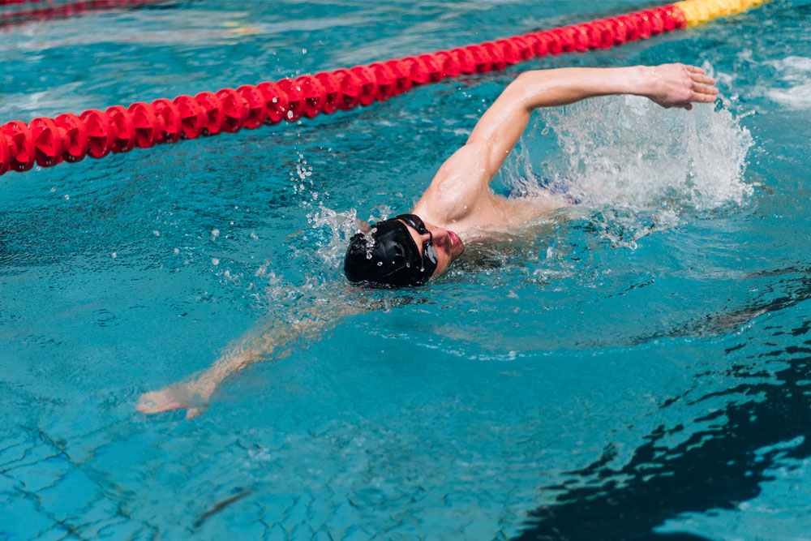
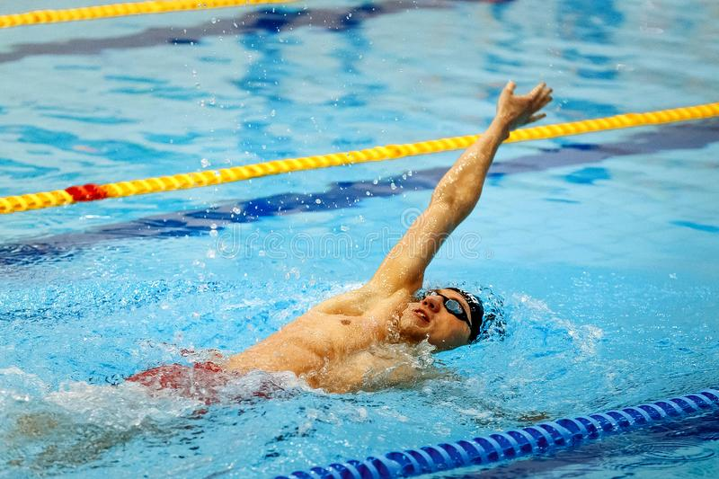
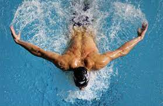
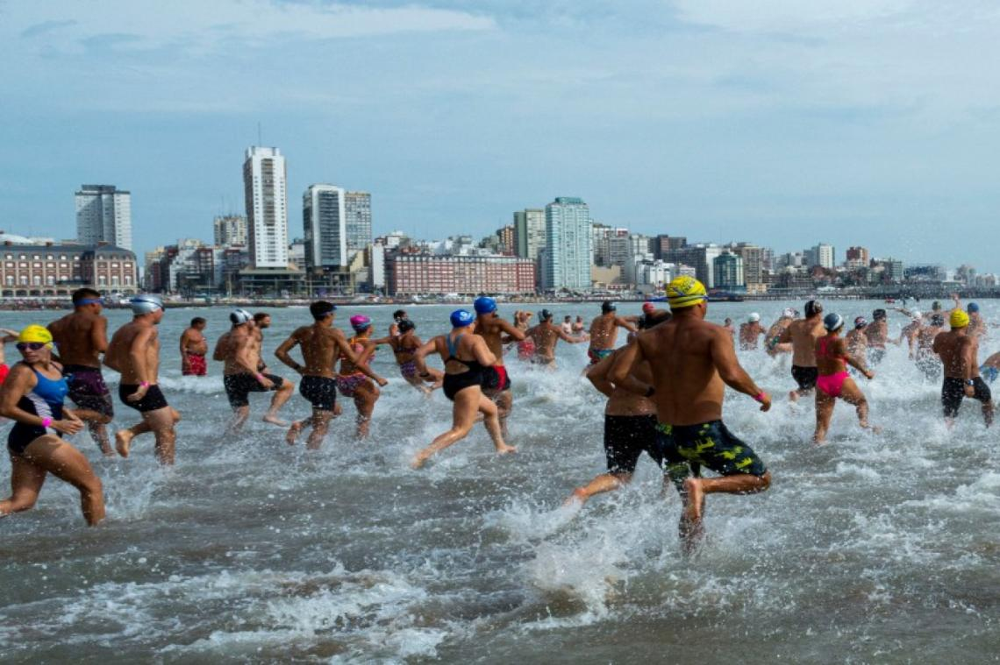
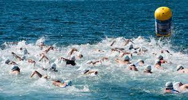

Escuela de natacion para todas las personas, de todas las edades, que deseen aprender a nadar.
Nuestra prioridad son nuestros alumnos y un ambiente sano y tranquilo donde uno puede venir y aprender a nadar. Tambien para que tengan en cuenta les nombramos los 10 veneficios principales que tiene la natacion
- Retrasa el envejecimiento. Se considera que el 50% de las pérdidas funcionales asociadas al envejecimiento depende de la escasa utilización de los sistemas corporales. Por eso, la práctica regular de la natación mantiene, funcionalmente, en buen estado a los órganos.
- Mejora la memoria. Esto se debe a los ejercicios de respiración que se ponen en práctica al nadar, los cuales oxigenan de mejor manera el cerebro. Además la coordinación motriz hace que nuestro cerebro tenga que crear nuevos lazos neuronales. No olvidemos que, al nadar, se requiere mayor concentración y coordinación.
- Beneficia la capacidad pulmonar. Al ser un ejercicio aeróbico, ayuda a los pulmones a hacer un uso más eficiente del oxígeno. Este tipo de actividad permite trabajar los grupos musculares grandes y eleva la frecuencia cardíaca, lo que contribuye a que los pulmones trabajen de menor manera. La natación hace que el ritmo cardíaco se ralentice y la presión sanguínea mejore.
- Aumenta la flexibilidad. Los resultados de un estudio que se llevó a cabo durante12 años y que fue difundido recientemente indican que el fortalecimiento de la zona lumbar permite terminar con el dolor de la zona baja de la espalda en el 80% de los casos.
- Para estar en forma. El número exacto de energías que se insume depende del cuerpo y la intensidad con la que se hace ejercicio. Pero realizando al menos una hora de natación se pueden quemar hasta 600 calorías.
- Aumenta la masa muscular y tonifica. ¿Alguna vez viste un delfín flácido o un nadador competitivo de aspecto débil? No lo creemos. Eso es porque la natación es una gran manera de aumentar la fuerza muscular y la tonicidad, especialmente en comparación con otros ejercicios aeróbicos. Cada patada y cada brazada se convierten en un ejercicio de resistencia en sí mismo, que constituyen la mejor manera de construir el tono y la fuerza. Con la natación los músculos trabajan de cinco a seis veces más que con cualquier otro tipo de actividad física.
- Reduce el riesgo de padecer enfermedades cardíacas. Debido a que la natación es un ejercicio aeróbico, ayuda a fortalecer la salud cardiovascular en varias facetas, incluyendo la reducción del colesterol “malo” o LDL (lipoproteínas de baja densidad), aumentar el colesterol “bueno” o HDL (lipoproteínas de alta intensidad) y disminuir la presión arterial. Cuando a esto se le añade ejercicio regular, los beneficios se maximizan notoriamente.
- Mayor flexibilidad corporal. La natación no sólo forma músculos más fuertes, sino que también mejora la resistencia de los tejidos conectivos (por ejemplo, ligamentos y tendones) aumentando la estabilidad de las articulaciones. Además, al ejercitar tus articulaciones, se incrementa la flexibilidad, fortaleza y rango de movimiento del cuerpo.
- Favorece la circulación. La postura horizontal que utilizamos al nadar beneficia la circulación sanguínea y además es de gran ayuda para las personas con problemas de tensión arterial al facilitar el retorno venoso desde las extremidades al corazón.
- Combate el estrés. Un estudio realizado en la Universidad de Harvard ha mostrado que 10 semanas de entrenamiento de la fuerza reduce los síntomas de la depresión clínica. Las mujeres que entrenaron su fuerza durante el estudio informaron que se sentían más seguras de sí mismas y “capaces”.
Organizacion de las temporadas de la pileta y mas
-
Pileta de invierno
La temporada de invierno empieza la segunda semana de Abril y finaliza en la ultima semana de Octubre. Las piletas durante esta temporada se encuentran cubiertas y calefacionadas para evitar que los alumnos pasen frio y se resfrien, aun asi se recomienda ir abrigado a la pileta, como podria ser una tulla, lo suficioente mente grande comompra cubrir gran parte del cuerpo, mas una remera para que absorba el agua, que cubre nuestro cuerpo.
-
Pileta de verano
La temporada de invierno empieza la segunda semana de Noviembre y finaliza en la ultima semana de Marzo. La pileta no estara calefacionada y tambien se encontrara al descubierto para evitar que los alumnos sufran, por golpes de calor devido a las altas temperaturas. Se recomienda venir lijero de ropa, como podria ser una musculoza y unos shorts a la pileta, tambien venir con protector solar de factor 30 como minimo y aplicarlo tanto antes de entrar al agua como a la slaida.
-
Colonia
La colonia de verano es un evento exlucivo para los menores que se raliza durante la temporada de verano, al igual que esta inicia en la segunda semana de Noviembre y finaliza en la ultima semana de Marzo. La colonia se efectua desde las 13hs hasta las 15hs los dias de semana, si a la salida de la colonia no se encuentra el tutor preceny y en su lugar se encuentra otra persona este devera de informarlo a la Sede de la pileta correspondiente.
-
Equipo de entrenamiento
El equipo de entrenamiento es un grupo dedicado al alto rendimiento, pero aun asi esto no excluye a nadie que quiera unirce y probar los retos que le depara este ambiente, pues dependiendo del nivel que tengan se ajustara a este y se ira escalando a una mayor dificultad. Tambien se le otorgaran equipos especiales de entrenamiento durante las practicas como elemtos para tener de peso muerto, tablas especiales, manoplas para la natacion, patas de ranas, etc.
Practicas a realizar
Los 4 estilos básicos de natación son brazada, crol, espalda y mariposa. Cada uno de ellos tiene una técnica totalmente distinta y una dificultad también variada. Pues en algunos de ellos se necesita de más esfuerzo.
-
Crol
El crol es el estilo más extendido pues no requiere de un exceso de técnica pero si que puede entrenarse duro en la piscina, además de ser bastante cómodo. Con el crol realizamos una acción de brazo y pierna que de manera alterna nos impulsan en mayor o menor medida, dependiendo siempre de la intensidad que le damos.
 -
Espalda
Para hacer bien el estilo de espalda es necesario un mínimo de técnica y es posiblemente el estilo más «incómodo». Pues es el único en el que la posición es inversa y requiere de sumergir la cabeza boca arriba en el agua. Sin embargo, resulta muy satisfactorio aprender a realizar espalda y nadar con este estilo.
 -
Pecho
Este es el estilo más fácil de realizar teniendo en cuenta el esfuerzo. Personas adultas e incluso con dificultades motrices pueden realizarlo sin gran ayuda. No tiene un empuje como en el resto y su recobro se realizar dentro del agua. Es bastante relajante tras un duro entrenamiento.

-
Mariposa
Este es el estilo que más cansa y no se recomienda que sea realizado por personas con problemas de espalda, pues en mariposa involucramos mucha intensidad para realizarlo. Además de que es necesaria una condición física moderada para poder entrenarlo en condiciones.

Eventos de la pileta
Temenos una see de eventos los cuales se realizan en todas las cedes los cuales son organizados para la diverson de todos, a esepcion del la "Fiesta de la pileta" esta se realiza en la Sede #1.
-
Competencia internas
La competencia interna se realiza en cada una de las 3 sedes tiene y por objetivo el fomentar el nado. Las competencias que hay son infantiles (6 a 16 años) y de adultos (a partir de los 18 años sin limite de edad). Las competencias a realizar son tanto individuales como en grupos.

-
Semana de la supervivencia
La semana de la supervivencia se realiza cada año en la ultima semana de la primavera, es un evento principalmente dirijido hacia los niño, pero no se preocupe pues los adultos tambien tendran sus retos de supervivencia para superar, como puede ser el de recate o balancearse en la lilana.

-
Fiesta de la pileta
La fiesta de la pileta es un evento el cual se realiza el ultimo Domingo de Octubre en la Sede #1, aqui converjen todas las sedes para selebrar el fin de la temprada de invierno y abir paso a la temporada de verano. se raliza en la sede #1 pues pocee un area muy hamplia para realizar la fiesta.

-
Padres e hijos
El dia de padres e hijos se realiza a comiensos de la primavera, en la que se espera la participacion de los padres, dentro del agua y practicar con sus hijos los que estos an estado aprendiendo a lo largo de la temporada, tambien estan invitados los abuelos en caso de que el padre no asista.

Eventos relacionados a la pileta
Estos eventos no son realizados por los administradores de la pileta, pero si por personas que estan asociados a nosotros y buscar dar la oportunidad de enfrentarce a nuevos retos, fuera del ambito de nuestra escuela.
-
Competencia en otras escuelas
La competencia en otras esculas se realiza multiples veces a lo largo del año y es una de las oportunidades que ofrecen para rellizar, desconocemos sus fechas ya que no son fijas, pero simpre se avisa con 1 meses y medio de anticipacion para caulquiera, que se tenga que organizar para la fecha.

-
Aguas avieras en rio
Las aguas aviertas en rio son 2 competiciones que se realizan a inicios y a fines del verano, se nadan un total de 5km, no hay peligro pues en todo momento de la comopeticion el grupo de nadadoes esta siendo escoltado por un grupo de lanchas con guardavidas y primeros auxilios.

-
Aguas aviertas en mar
Las aguas aviertas en el mar es una competicio realizada a mediados del verano con una distancia de nado de 8km. No existe riesgo pues el grupo de nadadoes esta siendo escoltado por un grupo de lanchas con guardavidas, primeros auxilios y una ambulancia que recorre la costa
 -
Aguas avietas en lago
Las aguas aviertas en lago a diferencia de las otras no tiene una corriente por la que uno pueda nadar, esta es estatica por lo que puede exijir un mayor esfuerzo, es una distancia de nado de 4km y se reliza entre lose ventos de las aguas aviertas de los rios y las aguas aviertas de los mar
